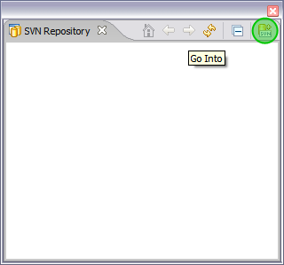
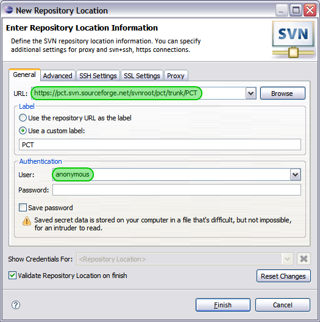
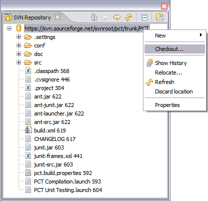
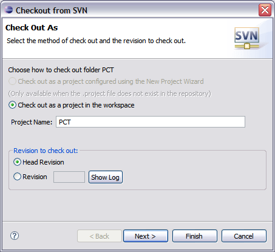
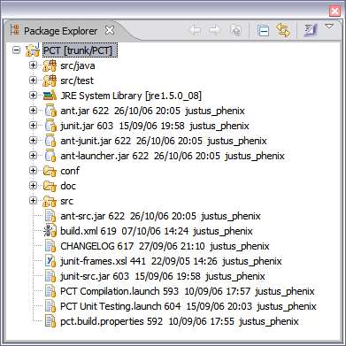
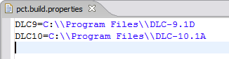
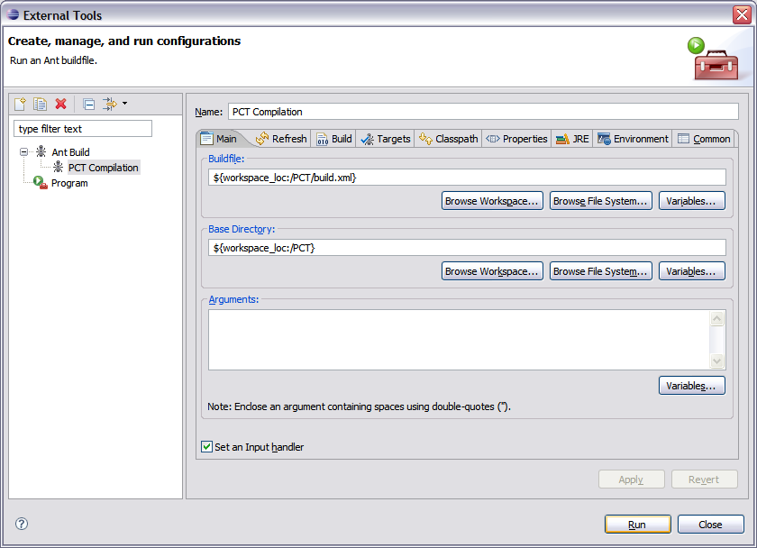
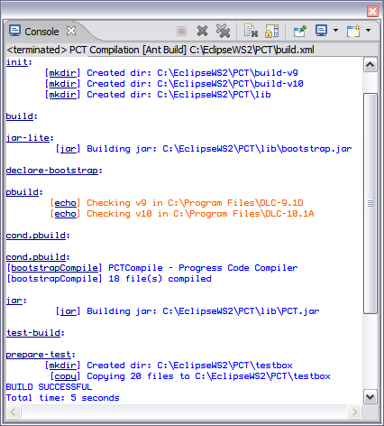
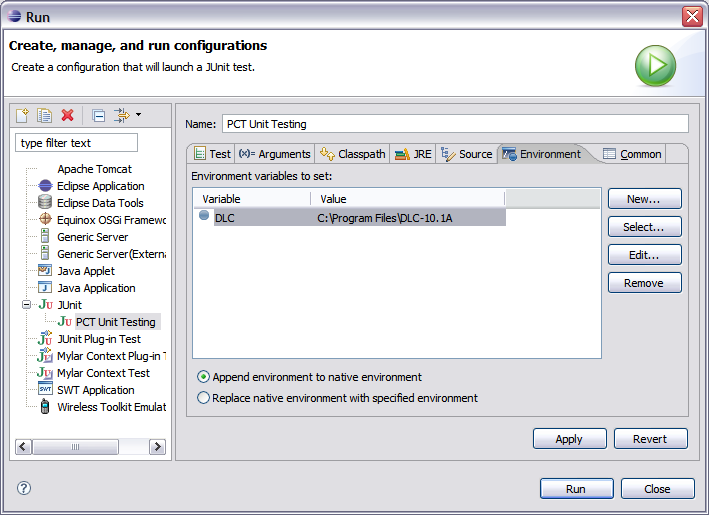
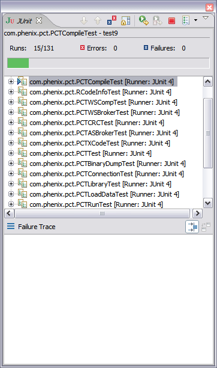

Improving PCT
Introduction
One of the best ways to improve PCT is to report bugs and missing features. Doing this is just a matter of minutes : drop me a mail with PCT in the title, describing your problem.
Want to do it yourself ?
Changing PCT's behavior isn't hard, as long as you know Progress and Java. I'm developing PCT using Eclipse, on both Windows and Linux platforms. The basic steps to develop with PCT are :
- Install Eclipse (3.2 recommended)
- Install Subversion plugin (download here)
- Open the SVN Repository Exploring Perspective, and add a new SVN repository
  - In the SVN repository view, right-click on repository's name, and click Checkout
 - Keep with default options, and click Finish. Go back to Java perspective, you should have PCT displayed in package explorer view.
 - Edit pct.build.properties according to your needs
 - Compile PCT using External Tools menu
 - Change classes and/or Progress procedures, then run JUnit tests to check your changes didn't break anything

$Date: 2006-03-27 21:12:46 +0200 (lun., 27 mars 2006) $